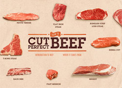

The story behind the butcher

Born and raised in Ottawa South, Chris was introduced into the meat industry at the young age of 12. Mopping floors and cleaning up, Chris truly learnt the trade from the ground up. Emerged in an environment focused on quality and service, these traits now lie at the centre of his craft.
Chris has dedicated over 25 years perfecting the art of preparing fine meats. With a passion for the history of the trade, you can still experience some of the lost arts like hanging beef until aged to perfection. Innovations like his California Roast and French Canadian Meat Tourtiere's are a few examples of what you will experience while visiting his shop.
Above all, Chris' dedication to quality originates from the love for his family and the desire to provide them with a healthy lifestyle centered around quality food. From his table to yours, consider yourself a part of the family.
About Our Products
With a vision to be the provider of the best products available today, at Christopher's you will find the following high quality meats.
Grain Fed, Free Range, “AAA” Angus Beef
Ontario, Free Range, Grain Fed Chicken
Ontario, Free Range, Grain Fed Pork
Ontario, Milk Fed Veal
Ontario, Free Range Lamb
Free Range, Grain Fed Turkey
Whole pigs for that perfect cook-out
Hinds of beef to fill your freezer
Ducks if you want to try your hand at tur-duck-en